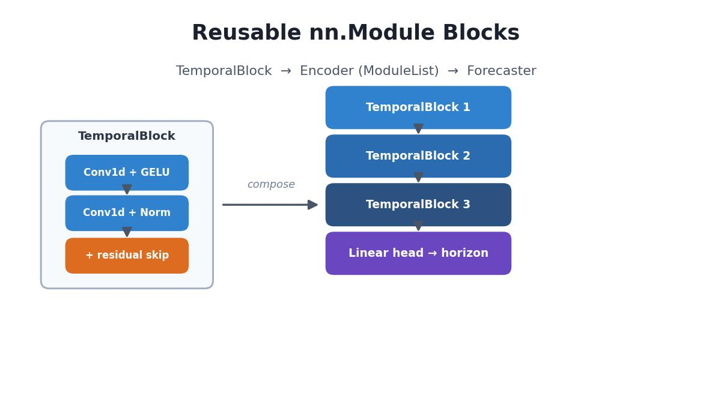
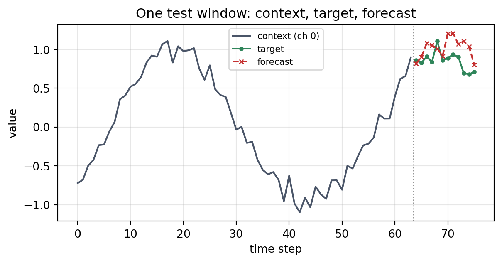
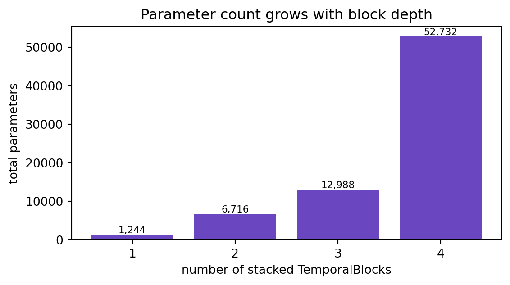

PyTorch 모델을 재사용·조합 가능한 nn.Module 블록으로 설계하는 실전 가이드입니다. nn.Module이 실제로 관리하는 것(파라미터·버퍼·서브모듈)을 정리하고, 명시적 형상 계약을 갖춘 잔차 시계열 블록을 만든 뒤 ModuleList로 쌓아 다단계 예측 모델을 조립합니다. 마지막으로 실제 학습을 돌려 이 추상화가 값을 하는지 확인합니다.
저자
Prof. Shin
공개
2026-08-03

[개념 시각화] 하나의 재사용 가능한 TemporalBlock을 쌓아 인코더와 예측 헤드로 조합한 구조입니다.
대부분의 PyTorch 모델은 하나의 클래스로 시작합니다. __init__에 스무 개 남짓한 레이어를 나열하고, forward에서 텐서를 손수 그 사이로 통과시키는 방식입니다. 같은 구조의 변형이 필요해지거나, 조금 더 깊은 스택을 시험하거나, 한 컴포넌트만 따로 테스트하려는 순간까지는 잘 작동합니다. 그 시점이 되면 거대한 단일 모듈이 오히려 병목이 됩니다. 재사용할 수 있는 것이 없고, 부분만 떼어 검증할 수 없으며, 설정을 바꿀 때마다 forward를 직접 손대야 하기 때문입니다.
대안은 nn.Module을 설계 의도대로 다루는 것입니다. 즉, 명확한 입출력 계약을 가진 조합 가능한 단위로 취급하는 것입니다. 이번 글에서는 작지만 재사용 가능한 시계열 라이브러리를 처음부터 만들어 봅니다. 잔차 시계열 블록 하나, 그 블록을 쌓는 설정 기반(config-driven) 인코더, 그리고 전체를 감싸는 예측 모델입니다. 그 과정에서 조합을 가능하게 하는 내부 메커니즘을 살펴보고, 마지막에는 조합한 모델을 실제로 학습시켜 이 추가 구조가 제값을 하는지 따져 봅니다.
nn.Module이 실제로 관리하는 것
블록을 설계하기 전에, 모듈이 무엇을 추적하는지 정확히 짚어 두면 도움이 됩니다. __init__ 안에서 self에 nn.Parameter나 서브모듈을 대입하면, PyTorch는 이를 자동으로 등록하여 .parameters(), .to(device), .state_dict()가 모두 그것을 찾을 수 있게 합니다. 여기에는 세 가지 서로 다른 상태가 있습니다.
파라미터(Parameter)는 requires_grad=True인 학습 대상 텐서이며, 옵티마이저가 갱신합니다.
버퍼(Buffer)는 모듈 상태에 속하지만 그래디언트를 받지 않는 텐서입니다. 실행 중 정규화 통계량이 대표적인 예입니다. state_dict에 함께 저장되고 .to(device)를 따라 이동하지만, 옵티마이저는 결코 건드리지 않습니다.
서브모듈(Submodule)은 다른 nn.Module 인스턴스입니다. 하나를 대입하면 그 파라미터와 버퍼가 부모 아래에 중첩되어 등록됩니다.
이 구분을 정확히 잡는 것이 아래 모든 패턴의 토대입니다. 파라미터로 저장해야 할 것을 버퍼로 두면 학습이 안 되고, 버퍼로 두어야 할 것을 파라미터로 두면 그래디언트 갱신이 통계량을 망가뜨립니다.
명시적 형상 계약을 갖춘 재사용 블록
핵심 단위는 채널 차원에 대해 작동하는 잔차 합성곱 블록입니다. 재사용성을 위해 할 수 있는 가장 유용한 일은 형상 계약(shape contract)을 독스트링으로 적어 두고 절대 어기지 않는 것입니다. 여기서는 (B, C, L), 즉 배치·채널·길이 규약을 고정하고, 'same' 패딩으로 길이를 보존합니다. 그래서 블록은 외부의 별도 처리 없이도 그대로 쌓을 수 있습니다. 잔차 스킵 연결은 He 등(2016)을 따르며, 입력과 출력 채널 수가 다를 때는 1×1 합성곱이 스킵 경로를 맞춰 줍니다.
코드
import torchimport torch.nn as nntorch.manual_seed(0)class TemporalBlock(nn.Module):"""A residual 1D-conv block over (B, C, L) tensors. Shape contract: input : (B, C_in, L) output: (B, C_out, L) # length preserved by 'same' padding """def__init__(self, c_in: int, c_out: int, kernel_size: int=3, dropout: float=0.1):super().__init__() padding = (kernel_size -1) //2# 홀수 커널에 대한 'same' 패딩self.conv1 = nn.Conv1d(c_in, c_out, kernel_size, padding=padding)self.conv2 = nn.Conv1d(c_out, c_out, kernel_size, padding=padding)self.norm = nn.BatchNorm1d(c_out)self.act = nn.GELU()self.drop = nn.Dropout(dropout)# c_in != c_out일 때 스킵 경로 채널을 맞추는 1x1 합성곱self.proj = nn.Conv1d(c_in, c_out, 1) if c_in != c_out else nn.Identity()def forward(self, x: torch.Tensor) -> torch.Tensor: residual =self.proj(x) h =self.act(self.conv1(x)) h =self.drop(h) h =self.norm(self.conv2(h))returnself.act(h + residual)block = TemporalBlock(c_in=3, c_out=16, kernel_size=5)x = torch.randn(8, 3, 64) # (B, C_in, L)y = block(x)print(f"input : {tuple(x.shape)}")print(f"output: {tuple(y.shape)}")print(f"trainable params in one block: {sum(p.numel() for p in block.parameters())}")
input : (8, 3, 64)
output: (8, 16, 64)
trainable params in one block: 1648
블록은 길이를 그대로 두고 채널 수만 바꿉니다. 계약이 약속한 그대로입니다. 인터페이스가 고정되어 있으므로 블록은 자신이 더 큰 신경망의 어디에 놓이는지 알 필요가 없습니다. 바로 이 점이 블록을 조합 가능하게 만듭니다.
조합: ModuleList와 설정 기반 구성
블록이 형상 계약을 지키면 쌓는 일은 간단해집니다. 여기서 놓치기 쉬운 핵심은, 순수한 파이썬 리스트에 담긴 모듈은 PyTorch에게 보이지 않는다는 점입니다. 그냥 리스트 안에 있는 파라미터는 결코 등록되지 않습니다. nn.ModuleList는 바로 이를 위해 존재합니다. 개수가 가변인 서브모듈을 담으면서도 그것들이 등록·탐색 가능하도록 유지해 줍니다. 폭(width)을 설정 리스트로 지정하면, “모델을 더 깊게”라는 요구가 forward 수정이 아니라 한 줄 변경으로 끝납니다.
코드
class TemporalEncoder(nn.Module):def__init__(self, c_in: int, channels: list[int], kernel_size: int=3):super().__init__() dims = [c_in] + channelsself.blocks = nn.ModuleList( TemporalBlock(dims[i], dims[i +1], kernel_size)for i inrange(len(channels)) )def forward(self, x: torch.Tensor) -> torch.Tensor:for blk inself.blocks: x = blk(x)return xenc = TemporalEncoder(c_in=3, channels=[16, 32, 32], kernel_size=3)h = enc(x)print(f"encoder output: {tuple(h.shape)}")print(f"num stacked blocks: {len(enc.blocks)}")print(f"encoder params: {sum(p.numel() for p in enc.parameters())}")
고정된 선형 파이프라인이라면 nn.Sequential이 더 간결합니다. 그러나 ModuleList는 명시적 forward 루프를 유지하므로, 블록이 스택을 가로지르는 스킵 연결, 보조 출력, 조건부 실행을 필요로 하는 순간에 진가를 발휘합니다. 위치가 아니라 이름으로 블록을 다뤄야 한다면 nn.ModuleDict가 그 대응물입니다.
버퍼와 파라미터의 구분
정규화는 버퍼와 파라미터의 구분이 구체적으로 드러나는 지점입니다. 아래 표준화 모듈은 실행 중 평균과 분산을 유지하여, 추론 시 하나의 테스트 배치가 아니라 안정적인 통계량을 쓰도록 합니다. 이 텐서들은 state_dict()를 통해 저장·복원되고 모델을 따라 GPU로 이동해야 하지만, 그래디언트는 결코 받아서는 안 됩니다. register_buffer가 바로 그 요구를 표현합니다. nn.BatchNorm1d가 내부적으로 쓰는 것과 같은 메커니즘입니다(Ioffe & Szegedy, 2015).
코드
class RunningStandardizer(nn.Module):"""Standardizes (B, C, L) using running stats stored as *buffers*, not parameters -- they persist in state_dict but never get gradients."""def__init__(self, c: int, momentum: float=0.1):super().__init__()self.momentum = momentumself.register_buffer("running_mean", torch.zeros(c))self.register_buffer("running_var", torch.ones(c))def forward(self, x: torch.Tensor) -> torch.Tensor:ifself.training: batch_mean = x.mean(dim=(0, 2)) batch_var = x.var(dim=(0, 2), unbiased=False)with torch.no_grad():self.running_mean.mul_(1-self.momentum).add_(self.momentum * batch_mean)self.running_var.mul_(1-self.momentum).add_(self.momentum * batch_var) mean, var = batch_mean, batch_varelse: mean, var =self.running_mean, self.running_varreturn (x - mean[None, :, None]) / torch.sqrt(var[None, :, None] +1e-5)std = RunningStandardizer(c=3)_ = std(x) # 학습 모드 통과가 버퍼를 갱신함for name, buf in std.named_buffers():print(f"buffer {name:14s} shape={tuple(buf.shape)} requires_grad={buf.requires_grad}")print("learned parameters:", [n for n, _ in std.named_parameters()] or"none")
이 모듈은 상태는 있지만 학습 파라미터는 없으며, 버퍼는 requires_grad=False로 보고됩니다. 만약 이것들을 nn.Parameter로 선언했다면 옵티마이저가 학습 중 실행 통계량을 이리저리 끌고 다니면서 그 의미를 무너뜨렸을 것입니다.
예측 모델 조립과 가중치 초기화
이제 조각들을 하나의 완전한 모델로 조합합니다. 예측 모델은 더 흔한 (B, L, C) 배치를 받아 한 번 전치하여 블록 규약으로 바꾸고, 시간 축으로 평균 풀링한 뒤 다단계 지평(horizon)으로 사상합니다. 가중치 초기화는 self.apply(...)로 처리합니다. 이 메서드는 모든 서브모듈을 재귀적으로 순회하므로, 초기화를 블록마다 흩뿌리는 대신 한 곳에서 일관되게 지정할 수 있습니다(He 등(2015)의 Kaiming 초기화).
코드
class Forecaster(nn.Module):"""(B, L, C_in) -> (B, horizon) single-target multi-step forecaster."""def__init__(self, c_in: int, channels: list[int], horizon: int, kernel_size: int=3):super().__init__()self.standardize = RunningStandardizer(c_in)self.encoder = TemporalEncoder(c_in, channels, kernel_size)self.head = nn.Linear(channels[-1], horizon)self.apply(self._init_weights)@staticmethoddef _init_weights(m: nn.Module) ->None:ifisinstance(m, (nn.Conv1d, nn.Linear)): nn.init.kaiming_normal_(m.weight, nonlinearity="relu")if m.bias isnotNone: nn.init.zeros_(m.bias)def forward(self, x: torch.Tensor) -> torch.Tensor: x = x.transpose(1, 2) # (B, L, C) -> (B, C, L) x =self.standardize(x) h =self.encoder(x) # (B, C_last, L) h = h.mean(dim=-1) # 시간 축 전역 평균 풀링returnself.head(h) # (B, horizon)model = Forecaster(c_in=3, channels=[16, 32, 32], horizon=12)xb = torch.randn(8, 64, 3) # (B, L, C)out = model(xb)print(f"model input : {tuple(xb.shape)}")print(f"model output: {tuple(out.shape)}")print(f"total params: {sum(p.numel() for p in model.parameters())}")print("top-level submodules:", [n for n, _ in model.named_children()])
model input : (8, 64, 3)
model output: (8, 12)
total params: 12988
top-level submodules: ['standardize', 'encoder', 'head']
Forecaster의 어떤 코드도 블록 내부에 손을 뻗지 않습니다. 각 컴포넌트는 텐서 인터페이스만 노출하고, 부모는 인터페이스끼리 배선할 뿐입니다. 합성곱 인코더를 LSTM 기반으로 교체하더라도 한 줄만 바꾸면 됩니다. 인코더 경계의 형상 계약이 고정되어 있기 때문입니다.
이 추상화는 값을 하는가
구조는 그 결과로 만들어진 모델이 학습될 때에만 가치가 있습니다. 조합한 예측 모델을 합성 3채널 시계열에 학습시켜 봅니다. 사인 곡선의 합에 잡음을 더한 신호이며, 64스텝 문맥으로부터 채널 0의 다음 12스텝을 예측합니다. 미래 정보 누수를 막기 위해 분할은 시간순으로 합니다.
코드
import numpy as npnp.random.seed(0)def make_series(n=4000): t = np.arange(n) series = np.stack([ np.sin(2* np.pi * t /50) +0.1* np.random.randn(n), np.sin(2* np.pi * t /37+1.0) +0.1* np.random.randn(n), np.cos(2* np.pi * t /24) +0.1* np.random.randn(n), ], axis=1)return series.astype(np.float32)L, H =64, 12def windows(arr, L, H): xs, ys = [], []for i inrange(len(arr) - L - H): xs.append(arr[i:i + L]); ys.append(arr[i + L:i + L + H, 0])return np.stack(xs), np.stack(ys)series = make_series()X, Y = windows(series, L, H)n_train =int(0.8*len(X)) # 시간순 분할Xtr, Ytr = torch.tensor(X[:n_train]), torch.tensor(Y[:n_train])Xte, Yte = torch.tensor(X[n_train:]), torch.tensor(Y[n_train:])model = Forecaster(c_in=3, channels=[16, 32, 32], horizon=H)opt = torch.optim.Adam(model.parameters(), lr=1e-3)lossfn = nn.MSELoss()losses, bs = [], 128model.train()for epoch inrange(15): perm = torch.randperm(len(Xtr)); ep =0.0for i inrange(0, len(Xtr), bs): idx = perm[i:i + bs] opt.zero_grad() loss = lossfn(model(Xtr[idx]), Ytr[idx]) loss.backward(); opt.step() ep += loss.item() *len(idx) losses.append(ep /len(Xtr))model.eval()with torch.no_grad(): pred_te = model(Xte) test_mse = lossfn(pred_te, Yte).item() test_mae = (pred_te - Yte).abs().mean().item()print(f"train windows: {tuple(Xtr.shape)}, test windows: {tuple(Xte.shape)}")print(f"final train MSE: {losses[-1]:.4f}")print(f"test MSE: {test_mse:.4f} | test MAE: {test_mae:.4f}")
train windows: (3139, 64, 3), test windows: (785, 64, 3)
final train MSE: 0.0520
test MSE: 0.0360 | test MAE: 0.1525
코드
import matplotlib.pyplot as pltfig, ax = plt.subplots(figsize=(6, 3.4))ax.plot(range(1, len(losses) +1), losses, marker="o", ms=3, color="#2b6cb0")ax.set_xlabel("epoch"); ax.set_ylabel("train MSE")ax.set_title("Training loss of the composed forecaster")ax.grid(alpha=0.3); fig.tight_layout(); plt.show()
그림 1: 조합한 예측 모델의 에폭별 학습 MSE.
손실이 매끄럽게 감소하고 테스트 오차가 학습 오차에 근접합니다. 시드가 고정된 정상(stationary) 합성 신호에서 기대할 수 있는 결과이며, 추상화가 최적화를 방해하지 않았음을 뜻합니다. 보류(held-out)한 창에 대한 예측은 모델이 잘하는 부분과 못하는 부분을 함께 보여 줍니다.
코드
k =5ctx, true, fc = Xte[k, :, 0].numpy(), Yte[k].numpy(), pred_te[k].numpy()fig, ax = plt.subplots(figsize=(6.4, 3.4))ax.plot(range(L), ctx, color="#4a5568", label="context (ch 0)")ax.plot(range(L, L + H), true, color="#2f855a", marker="o", ms=3, label="target")ax.plot(range(L, L + H), fc, color="#c53030", marker="x", ms=4, ls="--", label="forecast")ax.axvline(L -0.5, color="gray", ls=":", lw=1)ax.set_xlabel("time step"); ax.set_ylabel("value")ax.set_title("One test window: context, target, forecast")ax.legend(fontsize=8); ax.grid(alpha=0.3); fig.tight_layout(); plt.show()

그림 2: 하나의 테스트 창: 문맥(채널 0), 목표 지평, 예측.
모델은 목표의 위상과 수준은 따라가지만 정점 부근의 진폭은 과소평가합니다. 극단값을 매끄럽게 뭉개는 전역 평균 풀링에서 흔히 나타나는 특성입니다. 이는 구조적 한계가 아니라 모델링상의 한계이며, 헤드가 별도 모듈로 분리되어 있으므로 풀링을 더 날카로운 방식으로 바꾸는 것은 국소적인 수정으로 끝납니다.
설계상의 트레이드오프
조합성은 용량(capacity)을 값싸게 바꾸도록 해 주지만, 용량 자체가 공짜는 아닙니다. 아래 그림은 다른 조건을 고정한 채 블록 스택을 깊게 할수록 파라미터 수가 어떻게 늘어나는지 셉니다.
코드
depths = [[16], [16, 32], [16, 32, 32], [16, 32, 64, 64]]counts = [sum(p.numel() for p in Forecaster(3, ch, H).parameters()) for ch in depths]fig, ax = plt.subplots(figsize=(6, 3.4))ax.bar([str(len(d)) for d in depths], counts, color="#6b46c1")ax.set_xlabel("number of stacked TemporalBlocks"); ax.set_ylabel("total parameters")ax.set_title("Parameter count grows with block depth")for i, c inenumerate(counts): ax.text(i, c, f"{c:,}", ha="center", va="bottom", fontsize=8)fig.tight_layout(); plt.show()

그림 3: 쌓은 TemporalBlock 개수에 따른 전체 파라미터 수.
여기서는 블록을 더할 때 채널도 함께 넓히므로 파라미터 수가 대략 두 배씩 늘어납니다. 작은 데이터셋에서 이 경로는 곧장 과적합으로 이어집니다. 이 패턴의 가치는, 이런 실험이 모델을 다시 쓰는 것이 아니라 리스트 하나를 고치는 것으로 끝난다는 데 있습니다. 설계 덕분에 용량이 돌려 보고 측정할 수 있는 다이얼이 됩니다.
언제 도움이 되고 언제 해가 되는가
블록·조합 방식은 변형을 여러 번 돌릴 것으로 예상될 때 값을 합니다. 여러 깊이, 잔차를 제거한 소거(ablation) 실험, 혹은 같은 인코더가 서로 다른 두 헤드에 연결되는 경우 등입니다. 각 블록이 검증 가능한 형상 계약을 지키므로 컴포넌트를 따로 떼어 단위 테스트하기도 좋습니다.
반대로 성급하게 적용하면 해가 됩니다. 한 번 학습하고 버릴 모델에 세 겹의 추상화는 필요 없으며, 모든 하이퍼파라미터를 노출하고 모든 레이어를 선택 사항으로 만든 과도하게 일반화된 블록은 그것이 대체한 단일 모델보다 읽기 어려워집니다. 또한 설정 기반 구성은 오류의 성격을 “forward에서 즉시 터지는 크래시”에서 “세 블록 뒤에서 조용히 틀린 형상”으로 옮겨 놓습니다. 조합이 깊어질수록 명시적 형상 계약과 형상 단언(assertion)이 덜 중요해지는 것이 아니라 오히려 더 중요해지는 이유입니다.
결론
nn.Module로 설계하는 실질적 이득은 우아함이 아니라 지렛대입니다. 블록마다 고정된 형상 계약, 탐색 가능한 조합을 위한 ModuleList·ModuleDict, 학습되지 않는 상태를 위한 register_buffer, 한 곳에서의 초기화를 위한 apply가 함께 작동하여 구조 변경을 국소적 수정으로 바꿉니다. 학습한 예측 모델은 이 구조가 이번 과제에서 정확도를 희생시키지 않음을 확인해 주었습니다. 판단해야 할 것은 그 분량입니다. 실제로 만들 변형을 뒷받침할 만큼의 추상화만 두고 그 이상은 두지 않는 것입니다. 다음으로 가장 유용한 작업은 형상 계약을 실행 가능하게 만드는 일입니다. forward 안에 가벼운 형상 단언을 넣어 두면, 조합 오류가 몇 블록 아래가 아니라 발생한 그 자리에서 드러나게 됩니다.
참고문헌
He, K., Zhang, X., Ren, S., & Sun, J. (2016). Deep Residual Learning for Image Recognition. Proceedings of the IEEE Conference on Computer Vision and Pattern Recognition (CVPR), 770–778. https://doi.org/10.1109/CVPR.2016.90
He, K., Zhang, X., Ren, S., & Sun, J. (2015). Delving Deep into Rectifiers: Surpassing Human-Level Performance on ImageNet Classification. Proceedings of the IEEE International Conference on Computer Vision (ICCV), 1026–1034. https://doi.org/10.1109/ICCV.2015.123
Ioffe, S., & Szegedy, C. (2015). Batch Normalization: Accelerating Deep Network Training by Reducing Internal Covariate Shift. Proceedings of the 32nd International Conference on Machine Learning (ICML), 448–456.
Paszke, A., et al. (2019). PyTorch: An Imperative Style, High-Performance Deep Learning Library. Advances in Neural Information Processing Systems (NeurIPS), 32, 8024–8035.